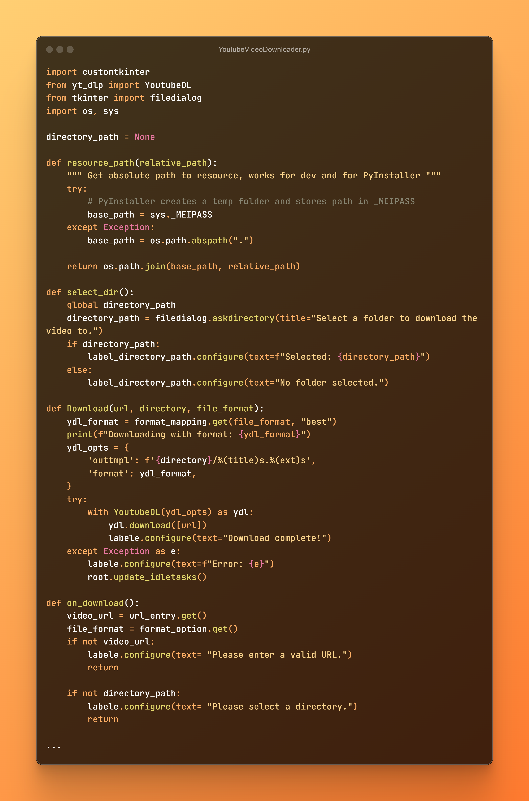
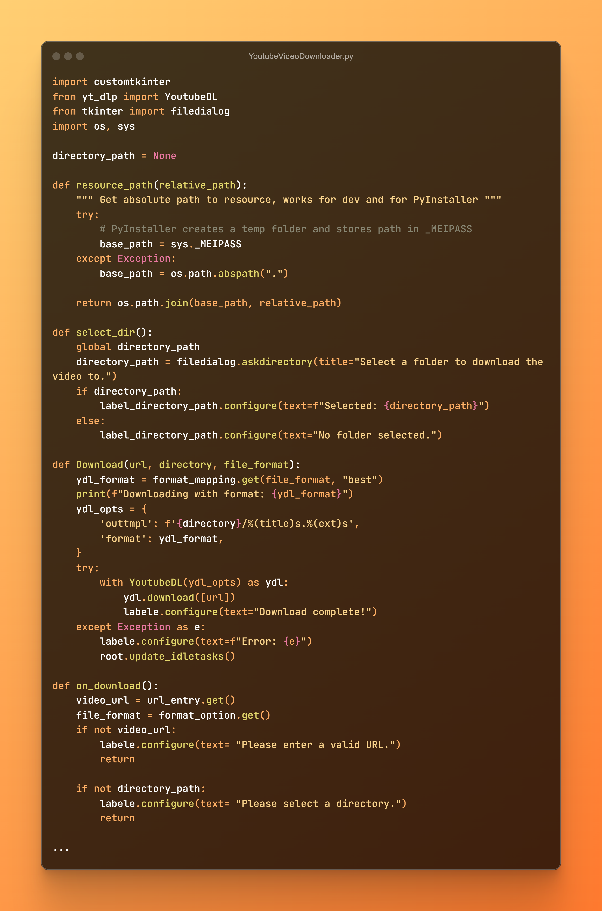
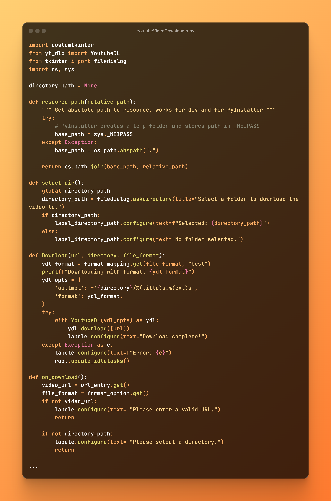

Portfólio
 

Eu sou um aluno e desenvolvedor amador.

Eu sou um aluno e programador amador, com foco em criar aplicações bonitas, úteis e acessíveis, com uma paixão pela progamação. Adoro trabalhar em projetos que me desafiam a aprender coisas novas, mas principalmente aqueles que realmente acabam sendo úteis e aprofudam meus conhecimentos na área.
Já trabalhei em diversos projetos, alguns deles são mostrados na sessão de portfolio. Já trabalhei em projetos como uma aplição em python capaz de fazer o download de videos do youtube com uma interface gráfica amigavél, um progama que organiza pastas bagunçadas em instantes, dentre outros projetos como jogos, assistentes virtuais e esse website que você está vendo agora!
Possuo um sólido conhecimento na matéria de Sistemas Operacionais, especialmente na área de algoritmos, e tenho experiência em programação em diversas linguagens, incluindo HTML, Portugol, Python e Scratch. Essa base me permite compreender tanto os conceitos teóricos quanto as aplicações práticas dos sistemas operacionais no desenvolvimento de software. Além do conhecimento técnico, tenho facilidade em explicar conteúdos e auxiliar colegas, o que contribuiria para o aprendizado dos estudantes da automação. Como monitor, poderei reforçar meu próprio aprendizado enquanto compartilho meus conhecimentos, ajudando a tornar a disciplina mais acessível e interessante para os alunos. Acredito que minha experiência e disposição para ensinar fazem de mim um candidato ideal para a monitoria, contribuindo para um ambiente de aprendizado colaborativo e produtivo.